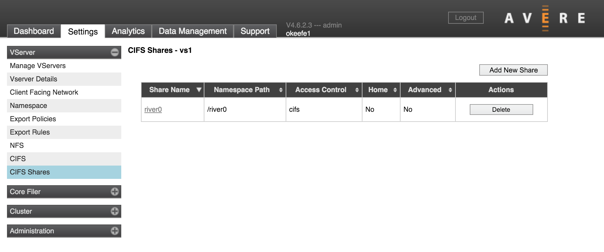
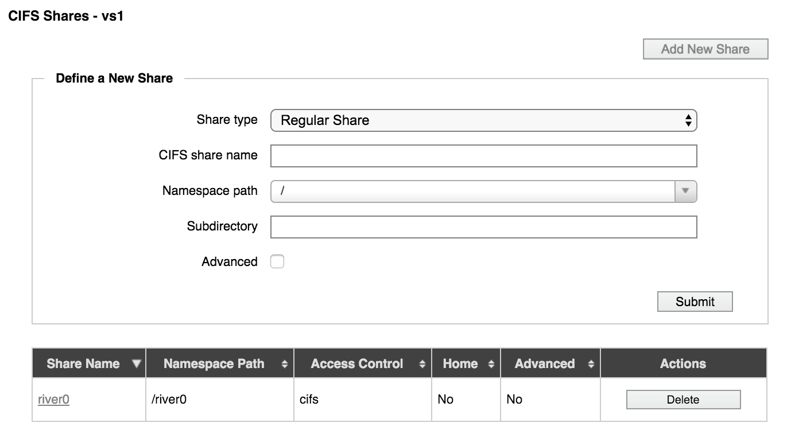
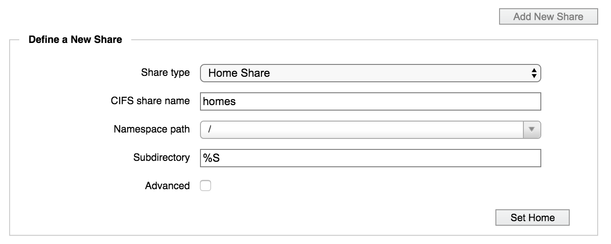

VServer > CIFS Shares

One of the final steps in configuring SMB access so that Windows clients can access data through the virtual server is to set up shares on the Avere cluster for communicating with core filers. These mappings are called SMB shares, or CIFS shares (for historical reasons - CIFS is an older version of SMB).
Avere Systems has tested up to 2000 SMB shares on one cluster.
Accessing SMB Shares
SMB/CIFS shares can be accessed from a Windows client by using the syntax
\\server_name.dns_domain\share_name
where
- server_name is the name of a server in the domain
- dns_domain is the fully qualified DNS name
- share_name is the name assigned to the SMB share
Example: \\maple.dev.example.com\NEWDATA
If a fully qualified DNS domain name is not used, the DNS search suffix is used to try to find the name. A NetBIOS name can be used in this setting, but NetBIOS lookup might fail if the server is not in the same network broadcast domain.
Creating SMB Shares
Use the CIFS Shares page (in the VServer section) to define shares.
- If you have more than one virtual server, choose an SMB-enabled vserver from the drop-down list in the side menu. (If you choose a vserver that is not configured for SMB, the CIFS Shares page will be empty.)
- Click the Add New Share button (it is above the list of existing shares). A panel labeled Define a New Share appears on the page.

From the Share Type drop-down list, choose the type of share to create:
Regular Share (the default) – The path to the share is determined by the NFS export path and the subdirectory path, combined.
Home Share – With a home share, the path includes a variable (%S or %U) that automatically maps subdirectories for each user. This feature allows administrators to create just one share but map home directories for each user or group on that share.
Include the variable in the Subdirectory field. Using %S gives access by share, which allows individual users to access all home directories on their share (if filesystem ACLs allow access). The %U option restricts access by username and also maps unknown share names to the user’s home directory - research the possible uses of this option before choosing it.
For example, with the settings in the image below, if a user with the name juser navigated to \\<domain>\homes, she would see the contents of the namespace path /juser.

Enter a name for the new share in the CIFS share name field. Share names must have the following properties:
Share names must be unique. Note: Share names are not case-sensitive.
Share names cannot contain control characters (0x00 - 0x1F)
Share names cannot contain any of the following characters:
" % * + , / : ; < = > ?[ \ ] |
Share names must be at least 1 character long but no more than 242 characters long.
Note
The maximum length for a SMB share name is technically 255 characters, but in an Avere cluster the share name is combined with its server’s NetBIOS name (maximum 15 characters) for an internal reference. A share name longer than 239 characters is not recommended because such a name can possibly exceed 255 characters when combined with the server name.
In Namespace path, select the junction to be used for the share. Multiple SMB shares can use the same junction.
If needed, enter a subdirectory for the export in the Subdirectory field. The subdirectory name can include additional directory path information.
For example, if you have a share named payroll that should resolve to the directory /mgmt/dept/finance/payroll and the share’s NFS export is /mgmt/dept, specify the subdirectory as /finance/payroll.
If you selected Home Share as the share type, the Subdirectory field is automatically populated with %U, which will be replaced with the username of a user on the SMB client. You also can use the %S option to create home shares.
Note
The values above cannot be changed after you create the share.
Optionally, set advanced properties for the share by selecting the Advanced checkbox. These settings are described in detail in the next section under Advanced Share Settings.
Click the Submit or Set Home button (the button text is different if the share type is Home Share).
The new share appears in the table of shares.
Advanced Share Settings
These settings can be configured when you create a new share, or in the share details page.
Browseable – If the share is browsable, users can view it by browsing to the vserver.
Inherit Permissions (POSIX mode bit junctions only) – Specifies whether new directories created under the share will automatically have the permissions of their parent directory. The default is No.
Do not attempt to enable Inherit Permissions on a junction that uses CIFS ACLs for access control.
Read Only – Use this setting to create a read-only share. The default (No) creates a read/write share.
Hide Unreadable - Setting this to Yes causes the system to exclude files and directories from directory listings if the user does not have permission to access them. The default setting is no (disabled) because hiding files on a per-user basis requires additional access checks and can impact performance.
Strict Locking – This feature causes the system to perform a byte-range lock check (a check on locks for a section of a file) each time data is read from or written to the SMB share. Leave it disabled (the default) to improve performance.
Although server-side lock checks are part of the SMB specification, this can be safely disabled because clients make lock checks before sending read or write requests.
Note
Avere OS does not support simultaneous multi-protocol locking. That is, you cannot lock a file or share from a SMB client and from an NFS client at the same time. Contact Avere Global Services to learn more.
Oplocks – Oplocks allow a client to locally cache multiple writes if no other client is using the file. This feature eliminates the overhead of writing repeatedly to the Avere cache during a period of intense activity from a single client. Select Disabled to disable all oplock support. Select Enabled (the default) to allow read/write oplocks.
Enabling the Oplocks setting permits level 1 and batch opportunistic locks, but does not enable level 2 oplocks - these are a separate setting.
Level 2 Oplocks – Select Disabled to prevent read-only oplocks. Select Enabled to perform lock checks on read-only oplocks (note that the main Oplocks setting also must be enabled).
Read-only Optimized – Select Yes to enable performance-related options on read-only shares. The default value is No.
There is also a vserver-level read-only optimization setting, which is configured on the VServer > CIFS page. The vserver-level setting is useful only if all of the vserver’s SMB shares are read-only.
Guest OK - Set this to Yes to allow users who are not listed in the authentication database to access this share. (This setting does not work reliably across all client types and is not recommended.)
Create Mask (POSIX mode bit junctions only) – Enter an octal value representing the UNIX permissions to use for newly created files in this share. The default is 0744 (read/write/execute by owner; read/execute by group; read/execute by any user).
Security Mask (POSIX mode bit junctions only) – Enter an octal value representing the UNIX permissions to set on a file whose permissions are changed by a Windows client from the native Windows security dialog box. The default is 0777 (read/write/execute for all users).
Directory Mask (POSIX mode bit junctions only) – Enter an octal value representing the UNIX permissions to set on a directory that is created with DOS permissions. The default is 0755 (read/write/execute by owner; read/execute by group; read/execute by any user).
Directory Security Mask (POSIX mode bit junctions only) – Enter an octal value representing the UNIX permissions to set on a directory whose permissions are changed by a Windows client from the native Windows security dialog box. The default is 0777 (read/write/execute for all users).
Force Create Mode (POSIX mode bit junctions only) – Enter an octal value representing the minimum set of UNIX permissions for any file created by the Avere OS SMB/CIFS server. The default is 0000 (no permissions).
Force Security Mode (POSIX mode bit junctions only) – Enter an octal value representing the minimum set of UNIX permissions for any file whose permissions are changed by a Windows client from the native Windows security dialog box. The default is 0700 (read/write/execute by owner; no permissions for others).
Force Directory Mode (POSIX mode bit junctions only) – Enter an octal value representing the minimum set of UNIX permissions for any directory created by the Avere OS SMB/CIFS server. The default is 0000 (no permissions).
Force Directory Security Mode (POSIX mode bit junctions only) – Enter an octal value representing the minimum set of UNIX permissions for a directory whose permissions are changed by a Windows client from the native Windows security dialog box. The default is 0000 (no permissions).
Force User (POSIX mode bit junctions only) – Enter a UNIX username that is assigned as the default user for all users of the Avere OS SMB/CIFS server. This is useful for sharing files. Note that specifying an incorrect username or a username without adequate permissions can cause access problems. There is no default value.
Force Group (POSIX mode bit junctions only) – Enter a UNIX group name that is assigned as the default group for all users of the Avere OS SMB server. This is useful for sharing files. Specifying an incorrect group name or the name of a group without adequate permissions can cause access problems. There is no default value.
Deleting or Modifying an SMB Share
To delete a share, click the Delete button in the share’s row in the table that lists the shares.
To modify a share, click the share name in the list of shares on the CIFS Shares page to open the share details page.

Some values, including the share name, access control type, export path, and subdirectory, can’t be modified after the share is created.
Other values can be changed from this page. (These values also can be set when you create a share; click the Advanced checkbox on the Define a New Share panel to show these fields.)
Share-Level Access Control Lists (ACLs)
Each SMB share has its own share-level ACL. This ACL determines which users and groups are permitted to connect to this SMB share.
Do not confuse share-level ACLs with the access control method selected on a namespace junction for SMB. Those selections set the junction’s security style (options are “POSIX mode bits” for NFS, or “CIFS ACLs” for NTFS), but do not specify which users may access the junction’s subdirectories.
Also note that a restrictive share-level ACL can prevent client access to a file on the back end even if ACLs on the target file or directory allow access.
A more detailed discussion of SMB share ACLs is included in Configuring Share-Level ACLs.
Avere OS does not read share-level ACL settings from core filers. If you have share-level ACLs set on back-end storage, you must replicate the share access control settings on the Avere cluster’s SMB shares.
To see what permissions are set on an SMB share, go to the share details page in the Avere Control Panel by clicking the share name in the list on the CIFS Shares settings page.

Permissions are saved as access control entries (ACEs). You can delete or modify a permission by clicking the appropriate button in its Actions column.
Note
User and group names in an ACE cannot be changed; instead, delete the original entry and create a new one.
Click the Add ACE button to add a share-level permission setting for this SMB share.

Enter the following values:
- User/Group - The Windows user or group that the ACE applies to, by name or security ID (SID) in decimal form. Names from a trusted domain must contain the domain prefix. For example,
DOMAIN\UserOrGroupName.
- ACE Type - Choose whether to allow or deny the specified permission to the specified user or group. Note: Deny settings override Allow settings if there are conflicts. (Read Configuring Share-Level ACLs for more information.)
- Permission - Choose one of the following permission settings:
- Read - view, list, execute
- Change - all Read permissions, and also modify, add, and delete
- Full - all Change permissions, and also the ability to modify permissions
Click the Submit button to save the new ACE.
updated 2017-11-15
{kind=link}
{kind=link}